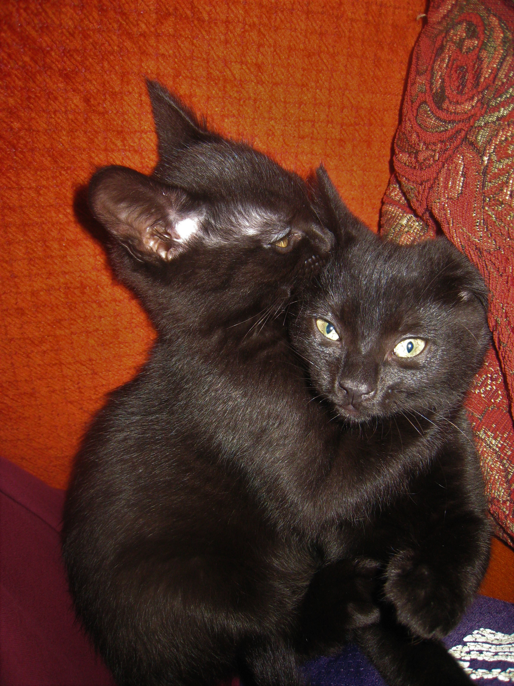
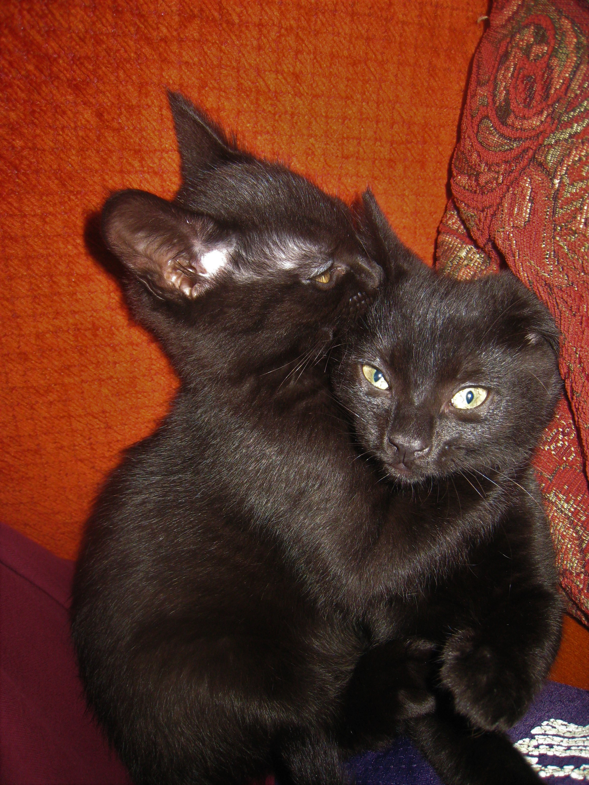

Hi, my name is Persephone but you can call me Percy. My dad is Gabe and he's been my daddy since 2010. He adopted me and my sister, Artemis, when were just babies.
Artemis and I played a lot and we would get into lots of trouble. Artemis and I used to wrestle, run up and down the stairs, and climb up curtains and tops of shelves.
 


After a few years of fun and laughter, Artemis got sick and my daddy took her to the hospital. But Artemis never came back home. I was pretty sad for a long time and I missed my sister because she was my best friend.
After about a year and a half, my daddy came home with another baby. Her name is Freya and she's a lot of trouble. I didn't know what to think of her at first. She looks
like Artemis when she was a baby.


Freya was really shy for a few days and my daddy played with her a lot. She wanted to play with me but I thought that she was too much. I'm tired just
watching her run, jump, and play. She would try to tackle me and it got old real quick. I must admit that Freya is really cute, but I'm cuter and I'm dad's favorite.
I guess I've gotten used to Freya since we are alone when my daddy is at work.
We would play but I can't really keep up with her too much. I just want to hang out and relax. The best
part though is when Freya and I just watch the birds, squirrels, and mice in the backyard from the inside. I also love hanging out on the couch and taking naps. I will never
forget Artemis but I'm very happy to have a new best friend and sister in Freya.